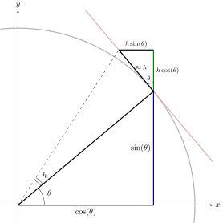
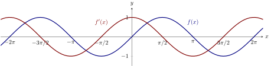

We derive the derivative of sine.
It is now time to visit our two friends who concern themselves periodically with
triangles and circles. In particular, we want to show that Before we tackle this
monster, let’s remember a fact, and derive a new fact. You may initially be
uncomfortable because you can’t quite see why we need these results, but this
style of exposition is a fact of technical writing; it is best to get used to
it.
First, recall the fact that Next, we will use this fact to derive our new fact:
After these delicious appetizers, we are now ready for the main course.
The derivative of sine For any angle measured in radians, the derivative of with respect
to is . In other words,
Using the definition of the derivative, write with me Now we
get sneaky and apply the trigonometric addition formula for sine, that says , to write
What is the slope of the line tangent to at ?
For your intellectual stimulation, consider the following geometric interpretation of
the derivative of .

From this diagram, we see that increasing by a small amount increases by
approximately . Hence,
With all of this said, the derivative of a function measures the slope of the plot of a
function. If we examine the graphs of the sine and cosine side by side, it should be
that the latter appears to accurately describe the slope of the former, and indeed this
is true.

Using the graph above, what is the value of in the interval where the tangent to the
graph of has slope ? The function has slope at .
Pro-tip: When working with trigonometric functions, you should always keep their
graphical representations in mind.